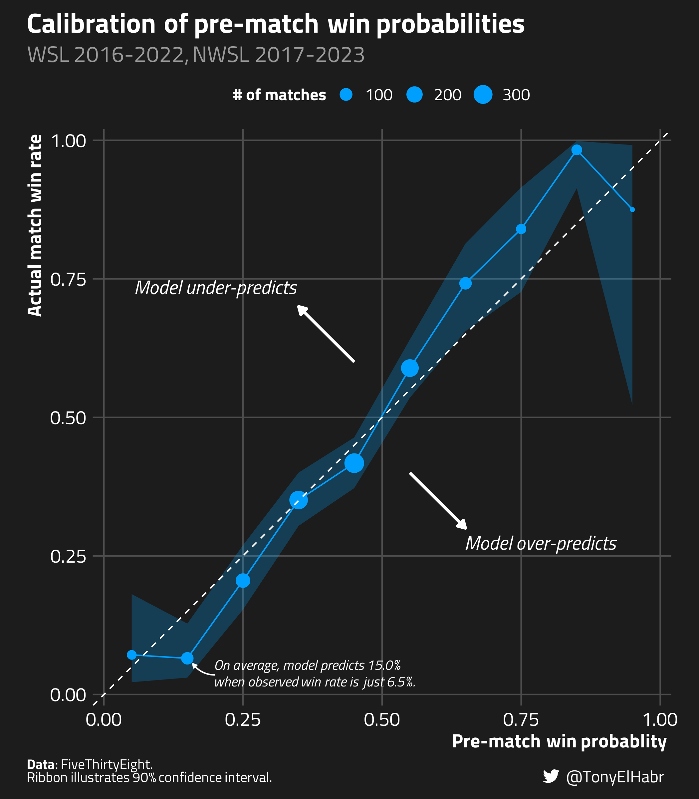
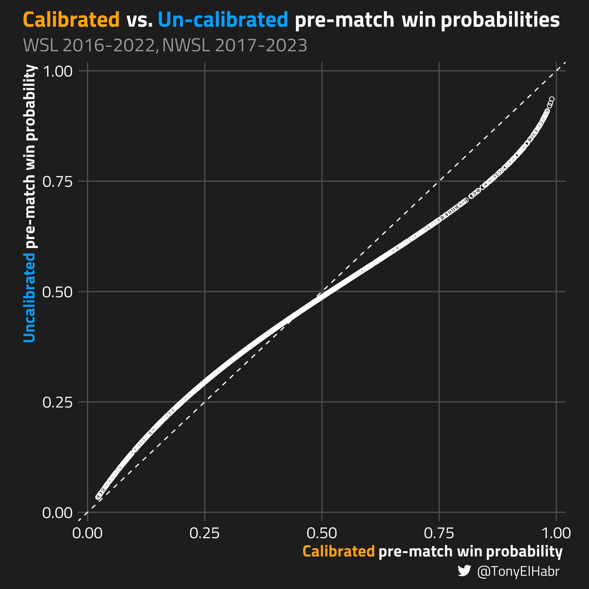

Using calibration to improve classifier model performance
Author
Tony ElHabr
Published
September 11, 2023
Modified
September 12, 2023
Introduction
Ever grappled with a classification model that consistently over-predicts or under-predicts an event? Your first thought might be to re-evaluate the model’s features or framework. But what if tweaking the model isn’t an option, either due to a lack of resources or access restrictions? The good news is, there’s another way–it’s called calibration.
Calibration falls in the “post-processing” step of predictive modeling.1 We modify the output of a model using nothing but the model predictions and labels of the output. We do that by, you guess it, fitting another model, often called a “calibrator”.
the pre-processing stage (e.g., feature engineering, normalization, etc.)
model fitting (actually training the model)
post-processing (such as optimizing a probability threshold)
One of my favorite (and relatively new) packages in the {tidymodels} ecosystem is the {probably} package. It provides functions that make it fairly straightforward to do calibration, even for those who are new to the concept. So let’s use {probably} to demonstrate the power of calibration.
To keep things simple, I’m going to treat this as a binary classification task, where matches are the “positive” outcome ("yes"), and losses and draws are grouped as the “negative” outcome ("no").
Retrieve data
library(readr)library(dplyr)matches <- readr::read_csv('https://projects.fivethirtyeight.com/soccer-api/club/spi_matches.csv') |> dplyr::filter(!is.na(score1), ## match is completed league %in%c("FA Women's Super League","National Women's Soccer League" ) ) |> dplyr::transmute( league, season, date, team1, team2,target =factor(ifelse(score1 > score2, 'yes', 'no')),## .pred_ is sort of a convention among {tidymodels} docs.pred_yes = prob1,.pred_no =1- .pred_yes )
matches#> # A tibble: 1,358 × 6#> date team1 team2 target .pred_yes .pred_no#> <date> <chr> <chr> <fct> <dbl> <dbl>#> 1 2016-07-09 Liverpool Women Reading yes 0.439 0.561#> 2 2016-07-10 Arsenal Women Notts County Lad… yes 0.357 0.643#> 3 2016-07-10 Chelsea FC Women Birmingham City no 0.480 0.520#> 4 2016-07-16 Liverpool Women Notts County Lad… no 0.429 0.571#> 5 2016-07-17 Chelsea FC Women Arsenal Women no 0.412 0.588#> 6 2016-07-24 Reading Birmingham City no 0.382 0.618#> 7 2016-07-24 Notts County Ladies Manchester City … no 0.308 0.692#> 8 2016-07-31 Reading Notts County Lad… no 0.407 0.593#> 9 2016-07-31 Arsenal Women Liverpool Women no 0.435 0.565#> 10 2016-08-03 Reading Manchester City … no 0.306 0.694#> # ℹ 1,348 more rows
Diagnosis
We start with the “diagnosis” phase: “How well do the original probabilities perform?” To evaluate this, we can use one of the several probably::cal_plot_* functions. In this case, we’ll use cal_plot_breaks().2
This function neatly divides the range of predicted probabilities from zero to one into distinct bins. For each bin, it calculates the observed event rate using data that has probabilities falling within that bin’s range. Ideally, if our predictions are calibrated, the curve produced should match up with a straight diagonal line, i.e. a 45-degree slope passing through (0,0) and (1,1). As a bonus, the probably::cal_plot_* family of functions even provides confidence intervals about the calibration curve.
library(probably)packageVersion('probably')#> [1] ‘1.0.1.9000’matches |> probably::cal_plot_breaks(truth = target,## the "_yes" in `.pred_yes` must match one of the values in `target`estimate = .pred_yes,## because "yes" is the second event level ("no" is the first)event_level ='second' )
{probably} offers some really neat automatic plotting of calibration curves. While I’d suggest giving them a try, I like to make my curves in a certain manner. In particular, instead of using a “rug”, I like showing sample sizes via points on the curve.

Indeed, it looks like there is some room for improvement with the match probabilities. It seems that the FiveThirtyEight model over-predicts when the actual win rate is low, broadly below 20%; and, likewise, it tends to under-predict when the true win rate is really greater than 60%
Remediation
Now we move on to the “remedation” step. That is, we fit a model, a “calibrator”, with the binary outcome as the target variable and the probability estimate as the lone input feature. {probably} offers several options with the cal_estimate_*() set of functions.
It’s almost shocking how simple the implementation is.
Results
With the calibrator model in hand, let’s make a scatter plot of all the points in the data set, viewing how the model has adjusted the original probabilities.

We observe that the calibrator has increased point estimates on the lower end of the spectrum and decreased estimates on the upper end of the spectrum. The calibration has seemingly fine-tuned under-predicting and over-predicting behavior from the original model.
To see the change that calibrator has made, we can re-make our calibration curve plot, adding the “calibrated” curve alongside the original “un-calibrated” curve.
Visually, it’s evident that the remediation has improved the probability estimates. The calibrated curve more closely “hugs” the ideal 45 degree slope across the whole probability spectrum.
Validation
To quantitatively describe the difference in calibration between the two models, we can compare the Brier Skill Score (BSS) of the un-calibrated and calibrated models.4 Keep in mind that a higher BSS indicates a more calibrated model. (1 is ideal. 0 indicates that the model is no better or worse than a reference model5.)
Indeed, we have (marginally) improved the original pre-match win probabilities. But this approach is arguably a little naive–we’ve only re-assessed the entire data set a single time without accounting for potential uncertainties.
Fortunately, the {probably} package provides the cal_validate_*() family of functions. These functions allow for a more rigorous assessment of whether the calibration enhances the original probabilities. We can generate resamples from the original data and then compute the average and standard error for our chosen metrics. This lets us compare the calibrated and uncalibrated probabilities more effectively.
Let’s do just that, using cross-validation with 10 folds and 10 repeats We’ll again use BSS to evaluate the model probabilities.
Robustly evaluate-ing calibrator
set.seed(42)sets <- rsample::vfold_cv( matches, v =10, repeats =10)## "fixed" in the sense that we're pre-defining the reference estimate.## I'm not sure there's another way of going about this when working in conjunction `yardstick::metric_set()` and `probably::cal_validate_*()`## withfixed_brier_skill_score.data.frame <-function(...) {brier_skill_score(ref_estimate = REF_ESTIMATE, ... )}fixed_brier_skill_score <-function(data, ...) {UseMethod('fixed_brier_skill_score')}fixed_brier_skill_score <- yardstick::new_prob_metric( fixed_brier_skill_score,direction ='maximize')eval_metrics <- yardstick::metric_set( fixed_brier_skill_score)validation <- probably::cal_validate_beta( sets,truth = target,metrics = eval_metrics)validation_metrics <- validation |> tune::collect_metrics() |>## i think the `.config` column is bugged (it just says "config" for all rows?) dplyr::select(-dplyr::any_of('.config'))validation_metrics
We find that the calibrator does indeed offer a “significant” improvement when assessed through this more statistically rigorous method. Specifically, the mean BSS of the validation set, minus one standard error, exceeds the mean of the uncalibrated BSS by more than one standard error.
pivoted_validation_metrics <- validation_metrics |> dplyr::transmute( .type, mean,lower = mean - std_err,upper = mean + std_err )pivoted_validation_metrics#> # A tibble: 2 × 4#> .type mean lower upper#> <chr> <dbl> <dbl> <dbl>#> 1 uncalibrated 0.196 0.191 0.201#> 2 calibrated 0.202 0.196 0.209
Conclusion
While I wouldn’t say “calibration is all you need”, it’s certainly something nice to have in your toolkit when you’re working on a modeling task. It can be a game-changer, especially when tweaking the original model isn’t an option, whether due to access limitations or, let’s be honest, sheer laziness.
Oh, and I failed to mention this earlier—calibration isn’t just for binary classifiers. Multinomial classifiers and even regression models can benefit from this technique as well.
Happy modeling, folks.
No matching items
Footnotes
The {tidymodels} guide breaks down the traditional modeling workflow into three steps:↩︎
Sticking with the basics, I use the defaults for num_breaks (10) and conf_level (0.9).↩︎
We don’t have a skew problem in this context, but it’s good to note when a Beta calibration might provide meaningful benefits over other calibration methods.↩︎